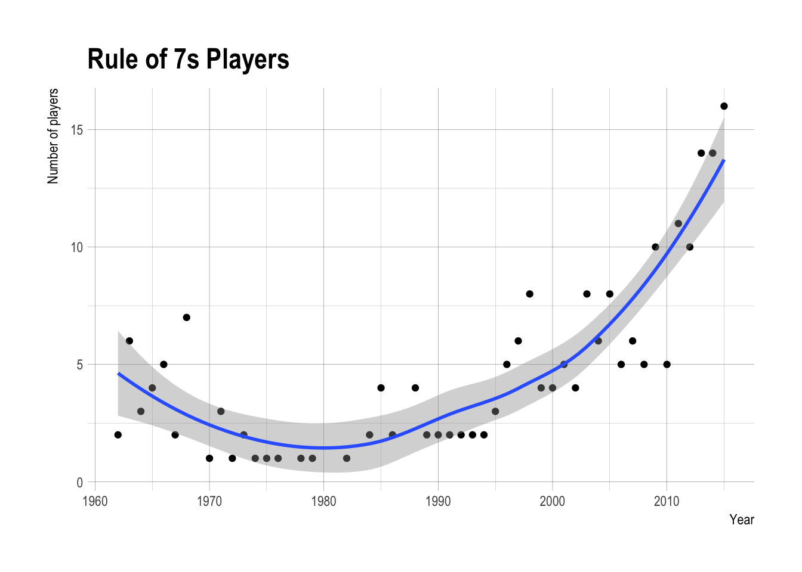

On the baseball podcast I listen to, guest host AJ Mass proposed that a rule of thumb for a top 20 pitcher would be someone with an ERA < 3.5 and a K/BB ratio of > 3.5 (3.5 + 3.5 = 7). I wondered if this was actually the case (i.e., how many pitchers achieve this mark each season).
Methods
I turned as usual to the Lahman database and the tidyverse packages.
library(Lahman)
library(dplyr)##
## Attaching package: 'dplyr'## The following objects are masked from 'package:stats':
##
## filter, lag## The following objects are masked from 'package:base':
##
## intersect, setdiff, setequal, unionlibrary(ggplot2)
library(hrbrthemes)Conceptually we want to know how many players reach this plateau each year. Ideally we’d want qualifying pitchers, which means they pitched 162 innings since the season went to this long in 1962 for both leagues.
data(Pitching)I filtered the pitching list by years after 1961. I then created a K/BB variable. After this I filtered by the Rule of Sevens rules, ERA < 3.5 and K/BB > 3.5 and qualifying pitchers (IP > 162). Finally I grouped by year and saw how many pitchers fit this mark.
Results
The code for the analysis yielded the following plot. There have been an increasing number of pitchers meeting these criteria since the 1990s. I overlaid a loess smoothing line over the points.
Pitching %>% filter(yearID > 1961) %>%
mutate(K_BB = SO/(BB + IBB)) %>%
filter(ERA < 3.5 & K_BB > 3.5 & IPouts > 162*3) %>%
group_by(yearID) %>%
summarize(Rule_of_7s_players = n_distinct(playerID)) %>%
ggplot(aes(x = yearID, y = Rule_of_7s_players)) +
geom_point() +
geom_smooth(method = "loess") +
theme_ipsum() +
labs(y = "Number of players",
x = "Year",
title = "Rule of 7s Players")
Who are these great pitchers? I looked at the 2015 players to get a sense. These were some pretty amazing seasons. As a Mets fan it was sad to see how fast Matt Harvey went from being one of the top pitchers in the game to virtually out of the big leagues. And what got into Wei-Yin Chen that year?!
data(Master)
Pitching %>% filter(yearID == 2015) %>%
mutate(K_BB = SO/(BB + IBB)) %>%
filter(ERA < 3.5 & K_BB > 3.5 & IPouts > 162*3) %>% inner_join(Master) %>%
select(nameFirst, nameLast, IPouts, ERA, BB, SO) %>% arrange(ERA) %>%
as.data.frame()## Joining, by = "playerID"## nameFirst nameLast IPouts ERA BB SO
## 1 Zack Greinke 668 1.66 40 200
## 2 Jake Arrieta 687 1.77 48 236
## 3 Clayton Kershaw 698 2.13 42 301
## 4 Dallas Keuchel 696 2.48 51 216
## 5 Jacob deGrom 573 2.54 38 205
## 6 Gerrit Cole 624 2.60 44 202
## 7 Matt Harvey 568 2.71 37 188
## 8 Max Scherzer 686 2.79 34 276
## 9 Madison Bumgarner 655 2.93 39 234
## 10 Chris Archer 636 3.23 66 252
## 11 Wei-Yin Chen 574 3.34 41 153
## 12 Jon Lester 615 3.34 47 207
## 13 Jose Quintana 619 3.36 44 177
## 14 Chris Sale 626 3.41 42 274
## 15 Danny Salazar 555 3.45 53 195
## 16 Corey Kluber 666 3.49 45 245How about the 2005 players? Other than Carlos Silva’s unreal control year (1.6 walks per 100 outs!), it was the usual suspects.
Pitching %>% filter(yearID == 2005) %>%
mutate(K_BB = SO/(BB + IBB)) %>%
filter(ERA < 3.5 & K_BB > 3.5 & IPouts > 162*3) %>% inner_join(Master) %>%
select(nameFirst, nameLast, IPouts, ERA, BB, SO) %>% arrange(ERA) %>%
as.data.frame()## Joining, by = "playerID"## nameFirst nameLast IPouts ERA BB SO
## 1 Andy Pettitte 667 2.39 41 171
## 2 Pedro Martinez 651 2.82 47 208
## 3 Chris Carpenter 725 2.83 51 213
## 4 Johan Santana 695 2.87 45 238
## 5 Jake Peavy 609 2.88 50 216
## 6 Roy Oswalt 725 2.94 48 184
## 7 Carlos Silva 565 3.44 9 71
## 8 Bartolo Colon 668 3.48 43 157In the 1990s the number of pitchers meeting Mass’s criteria were much fewer. I looked at 1995 for an example. Greg Maddux and Randy Johnson were dominant, but what a year for Shane Reynolds!
Pitching %>% filter(yearID == 1995) %>%
mutate(K_BB = SO/(BB + IBB)) %>%
filter(ERA < 3.5 & K_BB > 3.5 & IPouts > 162*3) %>% inner_join(Master) %>%
select(nameFirst, nameLast, IPouts, ERA, BB, SO) %>% arrange(ERA) %>%
as.data.frame()## Joining, by = "playerID"## nameFirst nameLast IPouts ERA BB SO
## 1 Greg Maddux 629 1.63 23 181
## 2 Randy Johnson 643 2.48 65 294
## 3 Shane Reynolds 568 3.47 37 175Finally which pitcher has the most seasons where he met AJ Mass’s criteria?
Pitching %>% filter(yearID > 1961) %>%
mutate(K_BB = SO/(BB + IBB)) %>%
filter(ERA < 3.5 & K_BB > 3.5 & IPouts > 162*3) %>%
count(playerID) %>% arrange(desc(n)) %>% inner_join(Master) %>%
select(nameFirst, nameLast, n ) %>% filter(n > 2) %>%
as.data.frame()## Joining, by = "playerID"## nameFirst nameLast n
## 1 Randy Johnson 7
## 2 Greg Maddux 7
## 3 Pedro Martinez 7
## 4 Curt Schilling 6
## 5 Roy Halladay 5
## 6 Fergie Jenkins 5
## 7 Sandy Koufax 5
## 8 Mike Mussina 5
## 9 John Smoltz 5
## 10 Kevin Brown 4
## 11 Chris Carpenter 4
## 12 Roger Clemens 4
## 13 Clayton Kershaw 4
## 14 Cliff Lee 4
## 15 Juan Marichal 4
## 16 CC Sabathia 4
## 17 Johan Santana 4
## 18 Madison Bumgarner 3
## 19 Jim Bunning 3
## 20 Zack Greinke 3
## 21 Cole Hamels 3
## 22 Dan Haren 3
## 23 Felix Hernandez 3
## 24 Bret Saberhagen 3
## 25 Chris Sale 3
## 26 Max Scherzer 3
## 27 Tom Seaver 3
## 28 Javier Vazquez 3
## 29 Justin Verlander 3This list demonstrates the sustained excellence for Randy Johnson, Greg Maddux, and Pedro Martinez (and even the sometime greatness of Kevin Brown).
Conclusions
AJ Mass’s rule of 7s is pretty good for the last few years, but before this decade, you would have to be a truly elite top 10 player to meet both criteria.